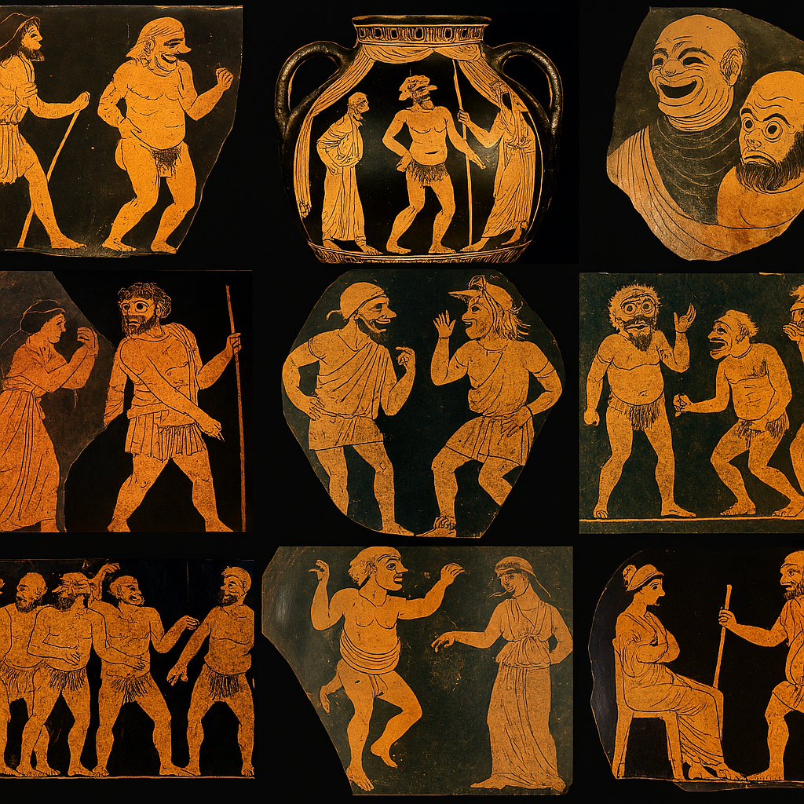
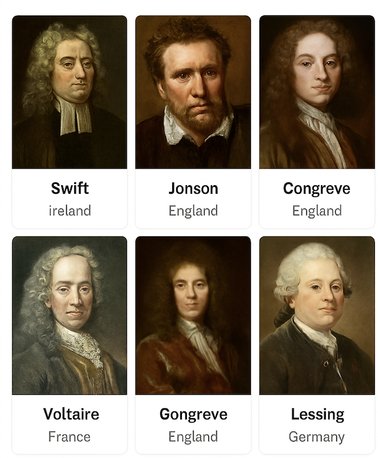
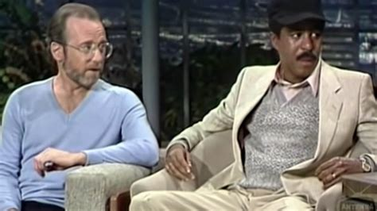
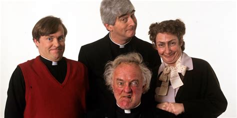

Introduction
From the ancient festivals of Greece to the global stages of Netflix specials,
comedy has reflected society’s shifting values and anxieties.
This page traces that journey across key historical periods,
showing how humor evolved in form, purpose, and performance.
Ancient Origins (5th–4th Century BCE)

While ancient Greek comedy is often cited as the birthplace of Western humor,
Ireland’s comedic tradition has deep roots in oral storytelling and satire.
Irish bards and seanchaí (traditional storytellers) used humor to critique power and entertain communities.
Satirical poetry, known as "aithris," was a respected form, and jesters in Gaelic courts held social influence.
For a scholarly overview, see
Performance and Identity in Irish Stand-Up Comedy (Springer)
.
Globally, comedy’s earliest forms were ritualistic.
In ancient Greece, comedic performances were part of Dionysian festivals.
These events featured exaggerated masks, chorus-led satire, and phallic symbolism.
Aristophanes’ plays like The Clouds and Lysistrata mocked politicians and philosophers,
blending slapstick with civic critique.
Menander’s New Comedy shifted focus from public affairs to domestic life.
His archetypes—miserly fathers, clever slaves, and romantic youths—
laid the groundwork for Roman and later European comedic tropes.
His influence is evident in Shakespeare’s comedies and modern sitcoms.
Learn more in
Oxford Academic’s Comedy, History, and Culture .
In ancient India, Sanskrit drama included comedic interludes called "prahasana,"
often performed between serious acts.
These sketches used stock characters and wordplay to entertain and critique social norms.
Similarly, Japan’s Kyōgen developed as a comedic counterpart to the solemn Noh theater.
Chinese comedic traditions date back to the Han dynasty, where jesters and comic performers entertained emperors.
Humor was often used to deliver veiled criticism—a practice that continues in modern Chinese satire.
These traditions highlight comedy’s universal role in balancing power and play.
In medieval Europe, comedic storytelling persisted through folk tales and carnival traditions.
The Feast of Fools and other festivals inverted social hierarchies, allowing peasants to mock clergy and nobility.
These events preserved comedic expression during periods of censorship and religious control.
Comedy’s evolution from sacred ritual to theatrical genre reflects its adaptability.
Whether in ancient Athens or Gaelic Ireland, humor served as both entertainment and resistance.
For a comparative study of global comedic origins, explore
Oxford Academic’s When the World Laughs .
Roman & Renaissance Comedy

While Roman and Renaissance comedy shaped much of Western theatrical tradition, Ireland maintained its own vibrant comedic culture rooted in oral storytelling.
Medieval Irish society revered satirists known as "file" and "aithirne," who wielded humor as a form of social critique.
These figures were believed to possess the power to shame kings and nobles through verse.
The tradition of humorous storytelling continued through the Gaelic bardic schools and later evolved into the witty prose of Irish playwrights like Richard Brinsley Sheridan in the 18th century.
For more on Ireland’s comedic heritage, see
JSTOR: Satire and Society in Early Irish Literature
.
Roman comedy, particularly the works of Plautus and Terence, adapted Greek New Comedy into Latin, emphasizing farcical situations and stock characters.
These plays were performed in public theaters and became educational tools during the Renaissance.
Explore more at
Cambridge University Press
.
During the Renaissance, humanist scholars revived classical texts, sparking renewed interest in comedic drama.
Italian playwrights reinterpreted Plautus and Terence, blending classical structure with modern themes.
Learn more at
JSTOR: Renaissance Drama and the Classical Tradition
.
Italy’s Commedia dell’Arte flourished in the 16th century, introducing masked characters and improvised dialogue.
Troupes traveled across Europe, performing scenarios that satirized social norms.
Characters like Arlecchino and Pulcinella became iconic.
For an overview, visit
Encyclopedia Britannica
.
In England, Shakespeare revolutionized comedic storytelling by combining classical influences with native folklore.
His plays featured complex plots, mistaken identities, and philosophical fools.
Comedies like As You Like It and The Tempest explored themes of love and transformation.
See
Folger Shakespeare Library
for more.
French playwright Molière continued the classical tradition with sharp social satire.
His works critiqued religious hypocrisy and aristocratic vanity.
For academic analysis, see
JSTOR: Molière and the Comedy of Manners
.
Renaissance comedy fused ancient structure with modern sensibilities, creating a lasting framework for satire and romantic comedy.
For comparative insights, visit
Oxford Academic: Comedy and Cultural Change
.
17th–18th Century Evolution

In Ireland, the 17th and 18th centuries saw the continuation of satirical verse and storytelling, often as a form of resistance to colonial rule. Poets like Aogán Ó Rathaille and Jonathan Swift used wit to critique political oppression and social hypocrisy. Swift’s A Modest Proposal (1729) remains a landmark in satirical literature, blending irony and dark humor to expose British indifference to Irish suffering. For more on Swift’s satirical legacy, see JSTOR: Swift and the Tradition of Satire.
In England, Ben Jonson’s comedies of manners, such as Volpone and The Alchemist, satirized greed and vanity among the elite. His sharp dialogue and moral undercurrents laid the groundwork for Restoration comedy, which flourished after the monarchy was restored in 1660. These plays featured witty repartee, sexual innuendo, and critiques of aristocratic excess. Learn more at Cambridge Companion to Ben Jonson.
Restoration comedy reached its zenith with playwrights like William Congreve and Aphra Behn. Their works, including The Way of the World and The Rover, explored themes of gender, power, and deception. These plays were performed in newly reopened theaters and catered to a growing urban audience. For a deeper dive, visit British Library: Restoration Comedy.
By the mid-18th century, “sentimental comedy” emerged as a reaction to the perceived immorality of Restoration plays. Writers like Richard Steele and Oliver Goldsmith emphasized virtue, emotion, and moral redemption. Goldsmith’s She Stoops to Conquer (1773) blended sentiment with farce, reviving laughter while preserving ethical themes. See JSTOR: Sentimental Comedy and the Enlightenment.
In France, the Enlightenment brought a shift toward philosophical comedy. Voltaire and Beaumarchais used humor to challenge authority and promote reason. Beaumarchais’s The Marriage of Figaro (1784) satirized aristocratic privilege and foreshadowed revolutionary ideals. These plays were both entertaining and politically subversive. Learn more at Oxford Academic: Comedy and Cultural Change.
Meanwhile, in Germany, playwrights like Gotthold Ephraim Lessing advanced the idea of comedy as a vehicle for moral instruction. His play Minna von Barnhelm (1767) combined humor with Enlightenment values, advocating tolerance and rationality. This intellectual approach to comedy influenced later German and Scandinavian dramatists.
The 17th and 18th centuries marked a transition from bawdy farce to refined satire and moral storytelling. Across Europe and Ireland, comedy became a tool for social commentary, emotional engagement, and political critique. For comparative perspectives, explore JSTOR: Comedy in the Age of Reason.
Birth of Modern Stand-Up (19th–Early 20th Century)

In Ireland, comedic performance during the 19th century was deeply tied to music halls and traveling theatrical troupes. Irish humor emphasized storytelling, mimicry, and satire, often performed in pubs and community halls. Figures like Percy French (1854–1920), known for humorous songs and monologues, laid the groundwork for Irish stand-up traditions. His blend of wit and social commentary influenced later Irish performers. For more on French’s legacy, see JSTOR: Percy French and Irish Comic Song.
Modern stand-up comedy emerged from vaudeville, minstrel shows, and music-hall traditions in the United States and Britain. These venues featured variety acts, including solo comedians who began addressing audiences directly. The shift from ensemble sketches to individual monologues marked a key evolution in comedic performance. Learn more at Cambridge University Press: Stand-Up Comedy and Vaudeville.
Charlie Case, often cited as one of the first true stand-up comedians, performed 10- to 15-minute monologues without props or costumes. His style emphasized timing, delivery, and personal narrative—hallmarks of modern stand-up. Case’s influence extended to later performers like Will Rogers and Bob Hope. For a historical overview, visit JSTOR: Origins of American Stand-Up.
In Britain, music halls provided a platform for comic performers like George Robey and Marie Lloyd. Their acts combined song, satire, and character-driven humor. These performances were often topical, poking fun at politics, class, and gender roles. The British tradition of observational and character comedy would later influence television sketch shows and stand-up circuits. See British Library: Music Hall Comedy.
Jewish comedians played a pivotal role in shaping early stand-up, particularly in New York’s Borscht Belt resorts. These venues catered to Jewish-American audiences and nurtured talents like Jack Benny and Milton Berle. Their routines blended self-deprecation, cultural commentary, and rapid-fire delivery. For more, explore JSTOR: Jewish Humor and American Comedy.
Technological advances also shaped comedy’s evolution. The rise of radio in the early 20th century allowed comedians to reach national audiences. Performers adapted their timing and material for audio formats, setting the stage for future transitions to television and film. For a media history of comedy, visit Oxford Academic: Comedy and Broadcasting.
By the early 20th century, stand-up comedy had become a distinct genre. It emphasized personal voice, direct audience engagement, and topical relevance. This period laid the foundation for the political, observational, and confessional styles that define contemporary stand-up. For comparative insights, see Cambridge University Press: Stand-Up Comedy in Theory.
The Golden Age (1930s–1960s)

In Ireland, the mid-20th century saw the rise of radio and stage comedy, with performers like Jimmy O’Dea and Maureen Potter becoming household names. Their work blended vaudeville, satire, and musical comedy, often poking fun at Irish politics and social norms. O’Dea’s character Biddy Mulligan, a Dublin street seller, became iconic for its working-class humor. These performers laid the foundation for Ireland’s modern comedic voice. For more on Irish comedy’s evolution, see JSTOR: Irish Popular Culture and Comedy.
In the United States, the Golden Age of comedy was shaped by the transition from vaudeville to radio, film, and television. Comedians like Jack Benny, Bob Hope, and Milton Berle became national figures, mastering timing and persona for mass media. Their routines emphasized clean humor, character-driven sketches, and audience rapport. Learn more at Library of Congress: Vaudeville and Radio Comedy.
Women also played a pivotal role during this era. Moms Mabley broke racial and gender barriers with her stand-up routines, addressing civil rights and generational conflict. Her success paved the way for future Black comedians and female performers. For a scholarly profile, visit JSTOR: Moms Mabley and African American Comedy.
British comedy evolved through radio and stage, with performers like Tony Hancock and the Goons (Spike Milligan, Peter Sellers) introducing surreal and absurdist humor. Their influence extended to later groups like Monty Python. Milligan, born in India to Irish parents, brought a unique blend of satire and nonsense that resonated across cultures. See British Library: Spike Milligan.
Meanwhile, the “new wave” of American comics—Mort Sahl, Lenny Bruce, and Lord Buckley—challenged conventional formats. They introduced political and philosophical themes, performing in intimate clubs rather than grand theaters. Their work laid the groundwork for confessional and satirical comedy. For more, explore Cambridge University Press: Stand-Up Comedy in Theory.
Television revolutionized comedy’s reach. Shows like The Ed Sullivan Show and Your Show of Shows introduced sketch comedy to millions. Writers like Mel Brooks and Carl Reiner honed their craft in writers’ rooms, blending slapstick with satire. These formats influenced sitcoms and late-night shows for decades. Learn more at PBS: Mel Brooks and American Comedy.
The Golden Age solidified comedy as a mainstream art form. It bridged live performance and broadcast media, diversified voices, and expanded thematic boundaries. Across Ireland, Britain, and the U.S., comedians used humor to reflect and reshape cultural identity. For comparative insights, visit Oxford Academic: Comedy and Cultural Change.
Modern Era (1970s–Present)


In Ireland, the modern era of comedy was shaped by political change, media expansion, and a growing appetite for satire. The 1970s and 1980s saw the rise of comic actors like Niall Tóibín and Dermot Morgan, whose work on shows like Scrap Saturday lampooned Irish politics and church authority. Morgan’s later role as Father Ted Crilly in the 1990s sitcom Father Ted brought Irish humor to international audiences, blending absurdism with cultural critique. For more on Irish comedy’s evolution, see Technological University Dublin: Irish Comedy and Identity.
In the U.S., the 1970s marked a shift toward more personal and provocative comedy. Richard Pryor and George Carlin redefined stand-up with routines that tackled race, religion, and politics. Their confessional style and linguistic freedom influenced generations of comedians. Carlin’s “Seven Words You Can Never Say on Television” became a landmark case in free speech law. Learn more at Library of Congress: Carlin and Comedy Censorship.
The 1980s comedy boom saw the rise of comedy clubs across North America and Europe. Stand-up became a viable career path, with performers like Eddie Murphy, Joan Rivers, and Billy Connolly achieving mainstream success. Television shows like Saturday Night Live and Comic Relief brought sketch and stand-up comedy to mass audiences. For a historical overview, visit JSTOR: The Comedy Club Explosion.
In Britain and Ireland, alternative comedy emerged in the 1980s as a reaction to traditional club humor. Performers like Alexei Sayle, Rik Mayall, and Dylan Moran rejected racist and sexist tropes, favoring surrealism and political satire. Moran’s introspective style and literary wit earned him acclaim across Europe. For more, see TU Dublin: Alternative Comedy in Ireland.
The 1990s and 2000s saw comedy diversify across platforms. Sitcoms like Seinfeld, Friends, and The Office redefined comedic storytelling, while stand-up specials became staples on cable networks. In Ireland, comedians like Tommy Tiernan and Dara Ó Briain gained international followings, blending observational humor with cultural commentary. Explore more at RTÉ Archives: Tommy Tiernan.
Digital media transformed comedy in the 2010s and beyond. Platforms like YouTube, TikTok, and podcasts democratized access, allowing emerging voices to bypass traditional gatekeepers. Irish creators like Foil Arms and Hog and Blindboy Boatclub gained global audiences through online sketches and satirical commentary. For insights into digital comedy’s rise, visit Oxford Academic: Comedy in the Digital Age.
Today, comedy is more diverse, global, and politically engaged than ever. From Netflix specials to grassroots open mics, comedians use humor to navigate identity, injustice, and absurdity. The modern era reflects comedy’s enduring power to entertain, provoke, and connect. For a comparative study, see Cambridge University Press: Stand-Up Comedy in Theory.
The Process of Creating Jokes: Past vs. Present
| Observation |
Rooted in lived experience, satire, and social critique. Ancient Greek comedy (e.g., Aristophanes) targeted political figures and civic norms. Medieval jesters used humor to navigate power structures, often protected by their role to speak truth to authority.
|
Comedians monitor digital ecosystems—trending topics, memes, and audience sentiment. Platforms like TikTok and Twitter serve as real-time cultural barometers, shaping joke relevance and timing.
|
| Idea Formation |
Humor emerged from exaggeration, irony, and incongruity. Theories from Freud and Bergson emphasized the psychological and philosophical roots of joke logic—highlighting tension release and social correction.
|
Ideas are rapidly prototyped and iterated. Creators experiment with formats (memes, sketches, duets) and adapt based on engagement metrics. The process is influenced by algorithmic visibility and virality.
|
| Structuring |
Classical joke structure involved setup and punchline, often embedded in poetic or theatrical forms. Timing and rhythm were essential, as seen in limericks and vaudeville routines.
|
Structure is platform-specific: short-form videos, captioned memes, and visual punchlines dominate. Attention economy dictates brevity and clarity, often favoring visual over verbal humor.
|
| Testing |
Jokes were tested in live settings—courts, taverns, and theatres—where audience feedback shaped delivery. The iterative nature of performance was central to comedic refinement.
|
Feedback is instant and data-driven. Likes, shares, comments, and watch time inform joke success. Creators adjust tone, pacing, and visuals based on analytics.
|
| Dissemination |
Humor circulated through oral tradition, printed satire, and staged performance. Cultural literacy and shared references were essential for comprehension.
|
Jokes spread globally via social media. Creators adapt humor to cross-cultural contexts, often relying on visual or universal themes to transcend language barriers.
|
| Collaboration |
Collaboration occurred within troupes or writer circles, but the audience remained passive. Humor was a crafted performance, not a participatory exchange.
|
Audiences now co-create humor. Remix culture—duets, stitches, meme templates—allows jokes to evolve communally. Participatory comedy reflects digital interactivity and democratized creativity.
|
| Summary |
Historical joke-making was slow, reflective, and embedded in cultural rituals. It emphasized language, timing, and social critique.
Springer: Palgrave Handbook of Humour
|
Modern joke-making is fast, iterative, and shaped by digital feedback loops. It reflects global reach, platform constraints, and participatory dynamics.
BMC Psychology: Linguistic Dimensions in Comedy
|